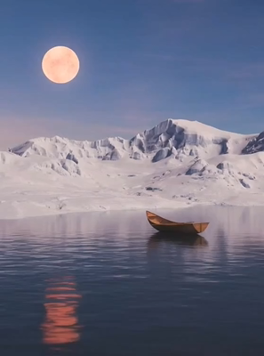

共有資料の一覧 ／ 確認ページ #631 【実験】小船と月で水と雲を作る（1発・改変と繋ぎの検証）
#631 【実験】小船と月で水と雲を作る（1発・改変と繋ぎの検証）
2026-09-07 実装・main合流・本番(GitHub Pages)反映まで実測確認
小船+月+雪景色の写真1枚から、①水面のごく微細な動き ②月を満月に改変 ③雲が右へゆっくり移動、の動画を2本（元の月版／満月版）作った。2本をfal内でフェード接続できる専用手段があるか調べたが見当たらなかった（画像同士の静止画ディゾルブ、固定opacityの動画重ね、画像間トランジション新規生成、ffmpeg系サービスは確認したが、時間経過でクロスフェードする2動画接続の専用モデルは無し）。
② 数字
$0.88（目安・約137円）かかった費用
約4分1秒生成待ちの実時間（8.5秒+11.2秒+126.4秒+95.0秒）
2枚+2本作った成果物
③ 実データでのスクリーンショット
改変前（元の写真）
改変後（月を満月に）
元の写真小船+月+雪景色、素材そのまま
月を満月に改変した写真fal-ai/nano-banana/edit、2回目で成功
動画1の代表フレーム元の月バージョン
動画2の代表フレーム
満月バージョン
④ 押せるリンク
⑤ 何をどう確かめたか
| 確認項目 | 結果 |
|---|
| 月を満月に改変できるか | できた（1回目は月が消える失敗→プロンプト修正で2回目成功） |
| 水面が破綻せず微細に動くか | 代表フレームでは破綻なし。実際の動きの滑らかさは動画本編を再生して確認要 |
| 雲が右へ移動するか | プロンプト指示どおり生成。動画本編で要目視確認 |
| 2本をfal内でクロスフェード接続できるか | 専用手段が見当たらなかった（正直に報告） |